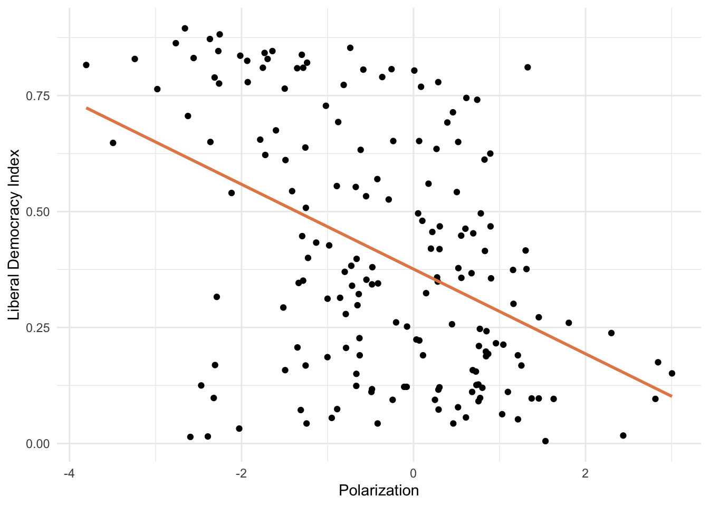

In the previous lesson, we discussed simple linear regression, which is a statistical method that allows us to model the relationship between a dependent variable and a single independent variable. In this lesson, we will discuss multiple linear regression, which is an extension of simple linear regression that allows us to model the relationship between a dependent variable and multiple independent variables. To get you started, here is a video where Andrew Ng explains the logic of multiple linear regression.
Multiple Regression
Mulitple linear regression is an extension of simple linear regression that allows us to model the relationship between a dependent variable and multiple independent variables. Extending on our earlier bivariate model, we can now include multiple predictors in our model. We would represent this in the following equation:
\[Y = a + b_1X_1 + b_2X_2 + \ldots + b_nX_n\]
Where \(Y\) is the dependent variable, \(a\) is the intercept, \(b_1\) through \(b_n\) are the coefficients, and \(X_1\) through \(X_n\) are the independent variables.
To solve this model, we use the same method of least squares to minimize the sum of squared residuals, except in this case, OLS is searching for combination of \(a\), \(b_1\), \(b_2\)…\(b_n\) that minimize sum of squared residuals across all predictors. So it is the same logic, just a bit more complicated.
To make things a little more concrete, let’s build up an example using the V-Dem data. Let’s first load the relevant packages and grab the data from V-Dem. We will use data from 2006 because we want a nice cross-section and it has data for all of the variables that we will be using in our analysis.
library(tidyverse)library(vdemdata)model_data<-vdem|>filter(year==2006)|>select(country_name, libdem =v2x_libdem, wealth =e_gdppc, oil_rents =e_total_oil_income_pc, polarization =v2cacamps, corruption =v2x_corr, judicial_review =v2jureview_ord, region =e_regionpol_6C, regime =v2x_regime)|>mutate(log_wealth =log(wealth), region =factor(region, labels=c("Eastern Europe", "Latin America", "MENA", "SSAfrica", "Western Europe and North America", "Asia and Pacific")))glimpse(model_data)
Previously, we were only interested in GDP per capita as a predictor of democracy. Now, let’s consider another predictor: political polarization (also measured by V-Dem). We can start with a simple scatter plot and a linear model to see the relationship between polarization and democracy cross-nationally.
ggplot(model_data, aes(x =polarization, y =libdem))+geom_point()+geom_smooth(method ="lm", color ="#E48957", se =FALSE)+labs(x ="Polarization", y ="Liberal Democracy Index")+theme_minimal()

We can see that there appears to be quite a strong relationship between political polarization and democracy. Now, as with GDP per capita in the previous lesson, we can estimate the relationship between political polarization and democracy using a linear model to get the coefficients that define the line we see in the plot above. We want to estimate this equation:
\[lib\_dem = a + b \times polarization\]
model1<-lm(libdem~polarization, data =model_data)summary(model1)
Call:
lm(formula = libdem ~ polarization, data = model_data)
Residuals:
Min 1Q Median 3Q Max
-0.59805 -0.17684 -0.01592 0.18703 0.52729
Coefficients:
Estimate Std. Error t value Pr(>|t|)
(Intercept) 0.38282 0.01871 20.464 < 2e-16 ***
polarization -0.08816 0.01402 -6.291 2.45e-09 ***
---
Signif. codes: 0 '***' 0.001 '**' 0.01 '*' 0.05 '.' 0.1 ' ' 1
Residual standard error: 0.2425 on 175 degrees of freedom
Multiple R-squared: 0.1844, Adjusted R-squared: 0.1798
F-statistic: 39.57 on 1 and 175 DF, p-value: 2.454e-09
We see that coefficient for polarization is -.088 and significant at the .0001 level. This means that for every one unit increase in polarization we should expect to see a .088 decrease in the liberay democracy score.
Now we can just add predictors to our model. Let’s add log wealth back in and see how it changes the relationship between polarization and democracy. The equation we are estimating here is:
model2<-lm(libdem~polarization+log_wealth, data =model_data)summary(model2)
Call:
lm(formula = libdem ~ polarization + log_wealth, data = model_data)
Residuals:
Min 1Q Median 3Q Max
-0.64889 -0.16271 0.04458 0.18225 0.40237
Coefficients:
Estimate Std. Error t value Pr(>|t|)
(Intercept) 0.19953 0.03441 5.799 3.18e-08 ***
polarization -0.05496 0.01389 -3.957 0.000111 ***
log_wealth 0.09516 0.01525 6.241 3.34e-09 ***
---
Signif. codes: 0 '***' 0.001 '**' 0.01 '*' 0.05 '.' 0.1 ' ' 1
Residual standard error: 0.2214 on 170 degrees of freedom
(4 observations deleted due to missingness)
Multiple R-squared: 0.3359, Adjusted R-squared: 0.3281
F-statistic: 42.99 on 2 and 170 DF, p-value: 7.781e-16
Now we can interpret the coefficients the same way as before, except we are doing so in the context of “all things being equal” or “holding other variables constant.” In this case, the coefficient for polarization is -.05 and again statistically significant. Thus we would say that holding GDP per capita fixed, a one unit change in political polaraization has a -.05 impact on the predicted level of democracy. Similarly, we could say that, holding polarization fixed, a one unit change in log GDP per capita increase the predicted democracy score by 0.095 units.
Now if we want to add yet another predictor, we can do so in the same fashion. Let’s say we are interested in the impact of oil rents on democracy. We can add this to our model and estimate the following equation:
model3<-lm(libdem~polarization+log_wealth+oil_rents, data =model_data)summary(model3)
Call:
lm(formula = libdem ~ polarization + log_wealth + oil_rents,
data = model_data)
Residuals:
Min 1Q Median 3Q Max
-0.53477 -0.14370 0.04181 0.13378 0.67744
Coefficients:
Estimate Std. Error t value Pr(>|t|)
(Intercept) 1.568e-01 3.225e-02 4.863 2.78e-06 ***
polarization -5.379e-02 1.303e-02 -4.130 5.87e-05 ***
log_wealth 1.317e-01 1.518e-02 8.675 4.76e-15 ***
oil_rents -4.121e-05 6.146e-06 -6.704 3.39e-10 ***
---
Signif. codes: 0 '***' 0.001 '**' 0.01 '*' 0.05 '.' 0.1 ' ' 1
Residual standard error: 0.1996 on 158 degrees of freedom
(15 observations deleted due to missingness)
Multiple R-squared: 0.4729, Adjusted R-squared: 0.4629
F-statistic: 47.25 on 3 and 158 DF, p-value: < 2.2e-16
Here the oil rents variable is negative and significant, suggesting that holding polarization and GDP fixed, a one unit change in oil rents per capita has a -.00004 unit impact on the predicted level of democracy. We would have to go back to the oil rents variable to understand the significance of this finding, but this gives you a basic sense of how to interpret the coefficients in a multiple regression model.
Categorical Variables
Another topic we want to cover is how to include categorical variables in a regression model. Recall that categorical variables are variables that take on a limited number of values. For example, whether a country has judicial review or not can be coded as a categorical variable. We can turn that variable into a dummy variable and include it in our model.
Let’s quickly visualize the relationship between wealth and democracy, incorporating judicial review as a factor variable that conditions the relationship between wealth and democracy. Note how we are using the factor() function to turn the judicial_review variable into a factor variable.
ggplot(model_data, aes(x =log_wealth, y =libdem, color=factor(judicial_review)))+geom_point()+geom_smooth(method ="lm", se =FALSE)+labs(x ="GPD per capita", y ="Liberal Democracy Index")+theme_bw()+scale_color_manual(name ="Judicial Review", values =c("steelblue3", "coral"), labels =c("No", "Yes"))
We can see that the relationship between GDP per capita and democracy is different for countries with and without judicial review. We can estimate this relationship using a linear model. We do this by simply incorporating the categorical variable, judicial_review, into our model. Here is the equation we want to estimate:
model4<-lm(libdem~log_wealth+judicial_review, data =model_data)summary(model4)
Call:
lm(formula = libdem ~ log_wealth + judicial_review, data = model_data)
Residuals:
Min 1Q Median 3Q Max
-0.65786 -0.13172 0.01504 0.16013 0.48439
Coefficients:
Estimate Std. Error t value Pr(>|t|)
(Intercept) -0.04986 0.04814 -1.036 0.302
log_wealth 0.11532 0.01337 8.627 4.30e-15 ***
judicial_review 0.26623 0.04400 6.051 8.91e-09 ***
---
Signif. codes: 0 '***' 0.001 '**' 0.01 '*' 0.05 '.' 0.1 ' ' 1
Residual standard error: 0.2099 on 170 degrees of freedom
(4 observations deleted due to missingness)
Multiple R-squared: 0.4032, Adjusted R-squared: 0.3962
F-statistic: 57.44 on 2 and 170 DF, p-value: < 2.2e-16
We can now interpret the coefficient on judicial_review as the expected difference in the predicted level of democracy between countries with and without judicial review, holding GDP per capita fixed. In this case, the coefficient is .27, suggesting that holding GDP per capita fixed, countries with judicial review are expected to be .27 units more democratic as per V-Dem’s liberal democracy measure.
Note that the intercept also has an important interpretation. The intercept is the average democracy score of countries without judicial review. Thus, the average democracy score of countries with judicial review is .17 + .27 = .44 and the average democracy score of countries without judicial review is just .17.
The judical review example here is an example of a dummy variable. Dummy variables are a way to include categorical variables in a regression model. Note that we always leave one category out of the model, as the omitted reference category. The coefficient on a dummy variable is then interpreted as the expected difference in the dependent variable between the category of the dummy variable and the omitted category. In this case, the omitted category is countries without judicial review.
Let’s try one more example. We will use the region variable to estimate the relationship between regions of the world and democracy. region will enter into the model as a factor variable. Noee that since Eastern Europe is the first category, default in R is to use that as the omitted category in models.
[1] "Eastern Europe" "Latin America"
[3] "MENA" "SSAfrica"
[5] "Western Europe and North America" "Asia and Pacific"
This means that when we run the regression, we will be interpreting the other region coefficients as the expected difference in the predicted level of democracy between that region and Eastern Europe, holding all other variables constant. And the coefficient will represent the value of the dependent variable for the omitted category (Eastern Europe).
model5<-lm(libdem~region, data =model_data)summary(model5)
Call:
lm(formula = libdem ~ region, data = model_data)
Residuals:
Min 1Q Median 3Q Max
-0.46216 -0.13657 -0.02175 0.11243 0.48665
Coefficients:
Estimate Std. Error t value Pr(>|t|)
(Intercept) 0.43563 0.03622 12.029 < 2e-16 ***
regionLatin America 0.06853 0.05372 1.276 0.20380
regionMENA -0.23528 0.05726 -4.109 6.16e-05 ***
regionSSAfrica -0.13757 0.04581 -3.003 0.00307 **
regionWestern Europe and North America 0.37312 0.05433 6.868 1.15e-10 ***
regionAsia and Pacific -0.13406 0.05212 -2.572 0.01096 *
---
Signif. codes: 0 '***' 0.001 '**' 0.01 '*' 0.05 '.' 0.1 ' ' 1
Residual standard error: 0.1984 on 171 degrees of freedom
Multiple R-squared: 0.4669, Adjusted R-squared: 0.4513
F-statistic: 29.95 on 5 and 171 DF, p-value: < 2.2e-16
Here the coefficient on Latin America is .06. This entails that, holding all other variables constant, countries in Latin America are expected to be .06 units more democratic than countries in Eastern Europe. Similarly countries in the MENA region are expected to be -.23 units less democratic than countries in Eastern Europe. Etc. And finally the predicted level of democracy in Eastern Europe is represented by the value of the coefficient, .44.
What if you want a different baseline category? In that case, we can use the relevel() function to change the reference category. Let’s make Sub-Saharan Africa the reference category and re-estimate the model.
# make SS Africa the reference categorymodel_data_relevel<-model_data|>mutate(new_region =relevel(region, ref=4))model6<-lm(libdem~new_region, data =model_data_relevel)summary(model6)
Call:
lm(formula = libdem ~ new_region, data = model_data_relevel)
Residuals:
Min 1Q Median 3Q Max
-0.46216 -0.13657 -0.02175 0.11243 0.48665
Coefficients:
Estimate Std. Error t value
(Intercept) 0.298060 0.028053 10.625
new_regionEastern Europe 0.137573 0.045811 3.003
new_regionLatin America 0.206100 0.048590 4.242
new_regionMENA -0.097710 0.052483 -1.862
new_regionWestern Europe and North America 0.510690 0.049260 10.367
new_regionAsia and Pacific 0.003511 0.046822 0.075
Pr(>|t|)
(Intercept) < 2e-16 ***
new_regionEastern Europe 0.00307 **
new_regionLatin America 3.63e-05 ***
new_regionMENA 0.06436 .
new_regionWestern Europe and North America < 2e-16 ***
new_regionAsia and Pacific 0.94031
---
Signif. codes: 0 '***' 0.001 '**' 0.01 '*' 0.05 '.' 0.1 ' ' 1
Residual standard error: 0.1984 on 171 degrees of freedom
Multiple R-squared: 0.4669, Adjusted R-squared: 0.4513
F-statistic: 29.95 on 5 and 171 DF, p-value: < 2.2e-16
Now we interpret all of the coefficients relative to Sub-Saharan Africa. For example, Eastern Europe is expected to be .138 units more democratic than Sub-Saharan Africa while Latin America is predicted to be .206 units higher. The predicted level of democracy in Sub-Saharan Africa for this year is represented by the constant–.298.
Challenge
The data we wrangled also includes a categorial regime variable: Closed autocracy (0), Electoral Autocracy (1), Electoral Democracy (2), Liberal Democracy (3) as well as a measure of corruption. Based on what you have learned, do you think you can use these data to answer the question of “which types of regimes have more corruption?”